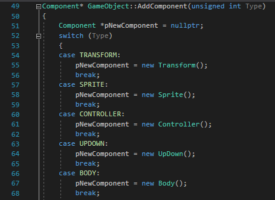

Run Time Type Reflection
Mar. 9, 2019
Hi.
Problem/Motivation:

code snippet from my first game engine
Now imagine if your game has 15 components. Every time you add a component you have to make changes in various parts of your game engine, like component manager, where you might have Add and Get component methods, enums of components; in Serialization & Deserialization. And god knows where else.
As your game grows, you will definiately keep adding many components. Every time you have to make sure to go to all these places and make changes to avoid any issues.
This is just a start of getting things worst. Let's say if you design a level editor, you want to show all your components and their data members for given game object. Or when you add enum type for a new game object.
Your code will soon be filled with if.. else if.. else if..
There is a better approach for this. It's called Run Time Type Reflection.
Good References:
https://www.rttr.org/
Gamasutra
Jesseshapiro
Mar. 25, 2019
Hi.
RTTR has ability to register classes, data members, functions, enumerators and much more.
- Registration
RTTR_REGISTRATION
{
rttr::registration::class_("Transform")
.constructor()
.property("Position", &Transform::mPos)
.property("Scale", &Transform::mScale)
.property("Rotation", &Transform::mRotate);
.method("Init", &Transform::Init);
}
- Use
rttr::type component = rttr::type::get_by_name("Transform");
rttr::constructor ctor = component.get_constructor();
rttr::variant obj = ctor.invoke();
Component* tr = &(obj.convert());
obj->AddComponent(tr);
rttr::instance inst = *tr;
for (auto prop : component.get_properties())
{
if(prop.get_type() == rttr::type::get())
{
float data = json["property_name"].GetFloat();
prop.set_value(tr, data);
}
}
This is just an idea of how type reflections can ease everything. I will upload my whole work on github soon.
I have set up Deserialization and Serialization using rttr such as I don't have to rewrite any of my code again even if I add new components. You still need to register every components and their properties if you want them to be Deserialized and Serialized. I also have Enumeration reflected which removes string to enum if conditions.
Moreover, you can use rttr for method invoking, which can be pretty useful. In my case, I use them for component pool constructors and destructors. So I don't have to write initialization of my components each time I add new.
If you want an example of how you can use it, check out my github repo. Feel free to go through Reflection and Editor code to see rttr references.
That's about it. Cheers!